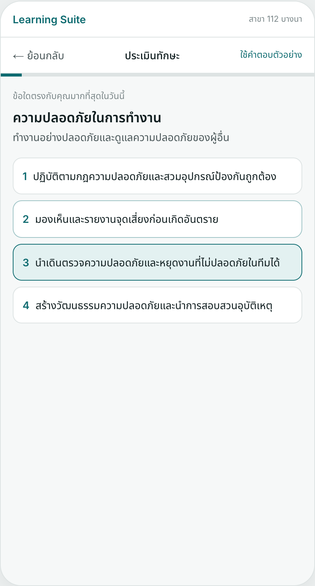
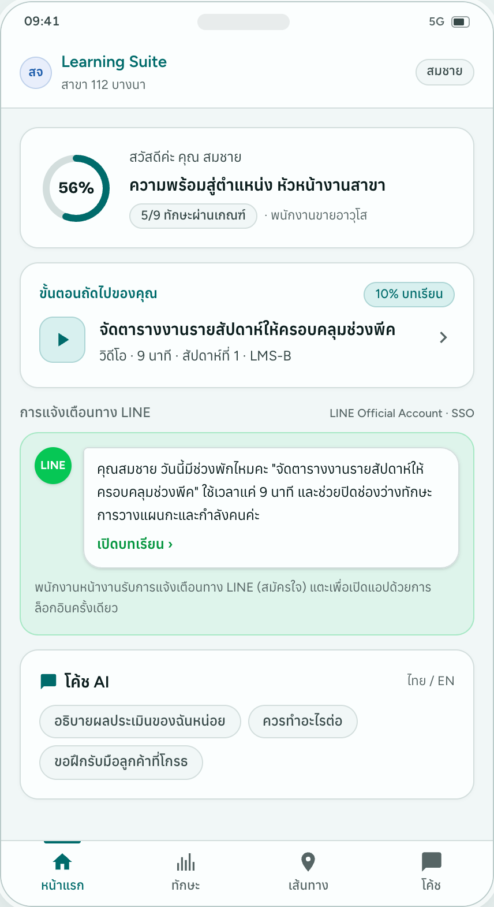
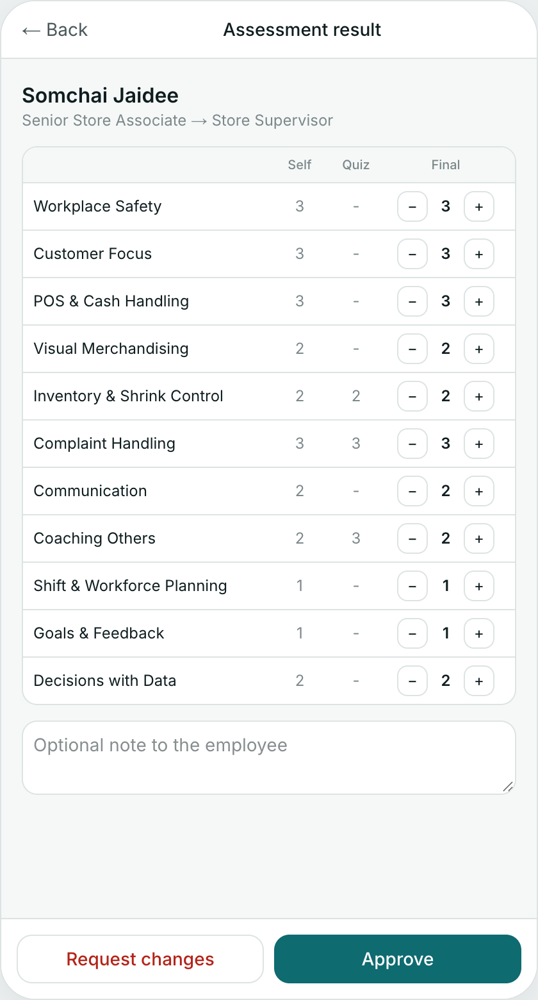
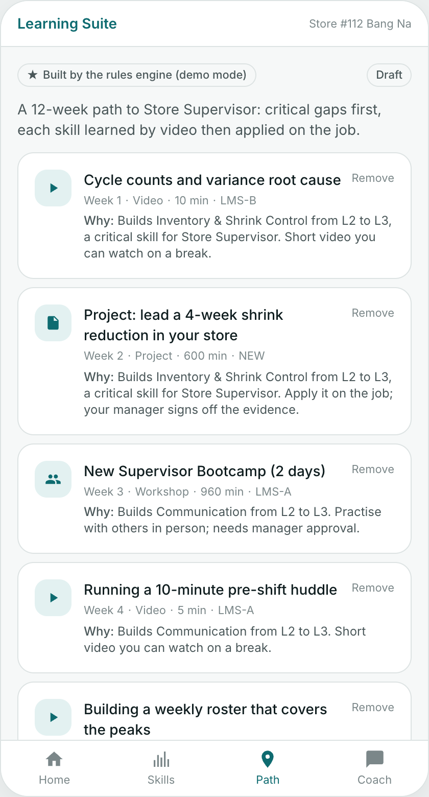

Summary
Client
Product
AI
Technology
Delivery
Commercials
Next steps
1 Sign in with LINE or employee ID
2 5-minute skill check on the phone
3 Manager approves the results (A)
4 AI builds a 12-week path; manager approves (B)
5 Learn on shift; ask the coach beside the lesson
6 Project evidence signed off (C); readiness updates

Skill check (Thai)

Next step + nudge

Manager approval

Path with reasons
So what
Frontline staff need one tap and five minutes; managers keep control without becoming a bottleneck.
Screens from an earlier prototype version (Thai and English) · current hosted screens on slide 12
4